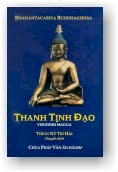

| BuddhaSasana Home Page |
Vietnamese, with Unicode Times font |
|  |
Thanh
Tịnh Ðạo
|
Lời Giới Thiệu Bản Thanh Tịnh Ðạo được sư cô Trí Hải dịch từ bản The Path of purification, bản dịch Anh ngữ của Thượng toạ Nànamoli, nguyên bản Pàli do luận sư Buddhaghosa sáng tác vào thế kỷ thứ V Tây lịch. Là bộ sách kết tập tinh hoa trí tuệ từ kinh tạng Kikàya, Thanh tịnh đạo có thể xem là bộ sách rất quý trong kho tàng văn học thế giới, không thể thiếu trong nguồn tài liệu Phật học bằng tiếng Việt, và là hành trang chủ yếu của những ai thực hành giải thoát ở đời. Dịch giả, sư cô Trí Hải, với nhiều kinh nghiệm dịch thuật, với nhiều năm nghiên cứu kinh tạng Nikàya, đã dịch Thanh Tịnh Ðạo rất cẩn trọng và chân xác. Chúng tôi tin tưởng bản dịch sẽ tự giới thiệu với quý độc giả nhiều hơn những giá trị chúng tôi đề cập. Với tư cách của người chuyển dịch kinh tạng Nikàya qua Việt ngữ, chúng tôi tán thán công đức phiên dịch của sư cô Trí Hải, và trân trọng giới thiệu bản dịch giá trị này. Hoà thượng Thích Minh Châu, 1991 -ooOoo- Lời Dẫn Visuddhimagga (Thanh Tịnh đạo) do Luận sư Buddhaghosa trước tác vào tiền bán thế kỷ thứ V sau TL, là một bộ sách tóm tắt giáo lý nguyên thuỷ thuộc Pàli tạng, theo một hệ thống đặc biệt dưới những đề mục Bảy thanh tịnh và Ba vô lậu học. Ðây là một chỉ nam rất tốt cho hành giả trong việc thanh lọc bản thân. Sách được Đại đức Nanamoli (người Anh, tu ở Tích Lan) dịch sang Anh ngữ vào năm 1956. Bản dịch này y cứ bản Anh ngữ ấy. Về các danh từ chuyên môn, phần lớn y cứ các bản dịch của Hoà Thượng Thích Minh Châu trong 5 bộ Nikàya, và nhất là hai tập THẮNG PHÁP TẬP YẾU (Abhidhammattha Sangaha). Nếu không nhờ các công trình đã đi trước ấy, dịch phẩm này cũng khó mà hoàn tất. Xin ghi lại đây niềm tri ân. Bản này khi in lại lần hai đã được rút gọn và sửa sai nhiều, bỏ bớt những chỗ trùng lặp lối hành văn xưa, và thỉnh thoảng dùng một vài danh từ thời thượng cho đỡ khô khan, nhưng bảo đảm là không đi quá xa với nguyên bản. Không tin, quý vị thử so với bản Anh ngữ thì sẽ thấy. Dịch giả kính đề. Lời Tri Ân
Thích Nữ Trí Hải -ooOoo- TIỂU SỬ NGÀI PHẬT ÂM (BUDDHAGHOSA) Còn gọi là Phật Minh, Giác Âm, Phật Ðà Cù Sa, Người ở Phật đà già da, nước Ma Kiệt Ðà (Magadha), thuộc Trung Ấn Ðộ, vào thế kỷ thứ V. Sư xuất thân trong gia đình Bà la môn, ban đầu học Phệ đà, tinh thông Du già, Số luận v.v..., về sau, Sư quy y Phật giáo, tinh thông các kinh điển. Vì mục đích hoằng truyền Phật pháp, rống tiếng rống của sư tử mà Sư soạn các chú thích bộ luận Phát trí (Nanodaya), luận Thù Thắng Nghĩa (Atthasàlini) và Luận Pháp Tập. Vào năm 432 Tây lịch kỷ nguyên, Sư vượt biển sang Tích Lan, trú tại Ðại tự (Mahàvihàra), theo Trưởng lão Tăng-già-ba-la (Sanghapàla Thera) nghiên cứu thánh điển tàng trữ tại chùa ấy, rồi đem dịch sang tiếng Pàli, và soạn Thanh Tịnh Ðạo luận (Visuddhimagga), Thiện Kiến Luật chú tự (Samantapàsàdikà) chú giải luật tạng (Sách nầy còn có tên là Thiện Kiến Luật Tì bà sa; Thiện Kiến luận.) v.v.... Ðồng thời, Sư đem giáo nghia của Thượng Toạ bộ ra soạn thuật thành một hệ thống hoàn chỉnh. Trong đó, có thể nói Thanh Tịnh Ðạo luận là một tác phẩm toát yếu toàn bộ Tam tạng kinh điển và Luận sớ. Về sau, Sư đem 4 bộ kinh Nikàya dịch sang tiếng Ba lợi (Pàli), và soạn chú sớ tại chùa Kiền Ðà la (Granthakara parivena), xứ A nỗ lạp đạt phổ lạp (Anuràdhapura). Giải thích Trường Bộ kinh thì có Cát Tường Duyệt ý luận (Sumangalavilàsinì); giải thích Trung Bộ kinh thì có Phá trừ nghi chướng luận (Papancasùdanì); giải thích Tương Ưng Bộ kinh thì có Hiển Dương Tâm Nghĩa Luận (Sàratthappakàsinì); giải thích Tăng Chi Bộ kinh thì có Mãn túc hi cầu luận (Manorathapùraịì). Ðến khi ấy Tam Tạng Ba Lợi mới cực kỳ hoàn bị. Những chú thích của Sư, không chỉ hạn cuộc chữ nào nghĩa nấy của bản văn, mà bao quát cả các loại giải thích về lịch sử, địa lý, thiên văn, âm nhạc, động vật, thực vật v.v..., đặc biệt, đối với phong tục tập quán của Ấn độ cổ đại, Sư còn làm thêm ký thuật liên quan đến những văn hiến trọng yếu dùng để nghiên cứu về Ấn độ. Người Tích Lan ca ngợi học vấn uyên bác của Sư và sùng kính Sư như là Bồ tát Di Lặc tái thế. Lúc cuối đời, Sư trở về cố quốc an dưỡng tuổi già. Nhưng trong lịch sử Phật giáo Miến Ðiện bảo Sư là người Miến Ðiện, khoảng năm 400 từ nước Kim Ðịa (Kim địa: ngày nay nằm về hạ lưu Miến Ðiện cho đến bán đảo Mã Lai Á.) vào Tích Lan du học, rồi 3 năm sau, đem kinh điển trở về phục hung Phật giáo Miến Ðiện. (Căn bản Phật Ðiển nghiên cứu; The Life and Work of Buddhaghosa, PQÐTÐ, tr 2643 a-c). Thích Phước Sơn TIỂU SỬ NGÀI NANAMOLI THERA (Na-na-ma-lợi Trưởng lão) (1905-1960) Tôn giả Nanamoli sinh ngày 25-6-1905 tại Anh quốc, thế danh là Osbert Moore (Áo-tư-bá- đặc-ma-nhĩ). Thiếu thời, Tôn giả tùng học và tốt nghiệp tại Ngưu Tân Ái Tắc Ðặc Học Viện. Trong lúc thế chiến thứ 2 xảy ra, Tôn giả phục vụ trong hàng ngũ lục quân Anh, và đóng quân tại Ý Ðại Lợi. Do nhân duyên dun rủi, Tôn giả cùng người bạn là Harold Musson (Cáp-la-đức Mặc-Tốn), đọc được một cuốn sách viết về Phật giáo của người Ý là J. Evola (Nghệ-a-na); vì thế, 2 người phát tâm quy hướng Phật giáo. Sau khi đệ nhị thế chiến kết thúc, Sư trở về nước, đến năm 1949 Sư cùng Mặc Tốn quyết tâm sang Tích Lan nghiên cứu Phật học, và may mắn được một Trưởng lão người Ðức là Nại-na-đề- lộ-biện hướng dẫn gia nhập Tăng đoàn, dưới quyền điều khiển của Ðại đức Ðại-na-nhã-biện-tì-trí-la-na-na. Sang năm sau (1950), hai người thọ giới cụ túc với Ðại na nhã biện nên tôn vị này làm thầy, và được pháp hiệu là Nànamoli. Ðến năm 49 tuổi (1954), ngài Na-na-ma-lợi chuyên tâm nghiên cứu ngôn ngữ Pàli, Tân cáp lợi và Miến Ðiện. Không bao lâu sau đó, Sư rất tinh thông các ngôn ngữ nầy, nhờ vậy có điều kiện nghiên cứu sâu về Phật pháp, và trở thành một học giả uyên thâm. Từ đó, Sư cộng tác với Hiệp hội Thánh điển Pàli (Pàli Text Society, PTS) để phiên dịch các kinh luận Pàli sau đây sang Anh văn: 1. Thanh Tịnh Ðạo Luận (Visuddhi-magga); 2. Vô Ngại Giải Ðạo (Patisambhidà-magga) 3. Chỉ Ðạo Luận (Nettipakarana); 4. Tạng Luận Thích (Petakopadesa). Ngoài ra, Sư còn viết về Lịch sử đức Phật và dịch kinh Trung bộ. Chừng ấy công trình phiên dịch cũng đủ chứng minh trình độ Phật học uyên thâm của Sư. Sư sống rất giản dị, tuân thủ giới luật một cách tinh nghiêm (trong suốt 11 năm trường, Sư chỉ mặc ròng y vàng, tượng trưng cho sự thanh khiết, và cũng hiếm khi xỏ chân vào dép). Tính tình hòa nhã, trầm lặng, ít nói, và mỗi lời nói của Sư đều là lời vàng ngọc, đầy tính chất trí tuệ và truyền cảm. Sư xem việc sinh tử nhẹ như lông hồng. Thế nên, trong lúc chiến tranh, đã bao lần đối diện với cái chết, nhưng Sư đều thoát khỏi. Sư viên tịch năm 1960. Từ lúc xuất gia cho đến lúc xả báo thân, ròng rã 11 năm trời, Sư cống hiến trọn vẹn cho sự nghiệp phiên dịch kinh điển, và truyền bá chánh pháp. Sư mất sớm, thật là một tổn thất lớn đối với Phật giáo. (Tây Dương Phật giáo học giả truyện, William Peiris soạn bằng Anh văn, Mai Nãi Văn dịch ra Hán văn, xb. 1986, tr. 73) Thích Phước Sơn TỔNG LUẬN Bộ Thanh Tịnh Ðạo Luận (Visuddhi-magga) gồm 3 quyển, do vị cao tăng Phật Âm (Buddhaghosa) người Ấn Ðộ trước tác khoảng giữa thế kỷ thứ 5, và được đưa vào Ðại tạng kinh thuộc Nam truyền, quyển 62-64. Ðây là một bộ luận trọng yếu thuộc Nam phương Thượng Toạ bộ. Gần đây, nó được ngài Thủy Dã Hoằng Nguyên người Nhật bản dịch ra Nhật văn (1937- 1940), và ngài Diệp Quân (Liễu Tham) dịch ra Hán văn và xuất bản năm 1987. Ðồng thời, Trưởng lão Nànamoli cũng đã dịch ra Anh văn và xuất bản tại Colombo Ceylon, năm 1956. Trọn bộ luận gồm 23 chương, nhằm giải thích giáo nghĩa của Thượng Toạ bộ phái, thứ tự tổ chức và nội dung tương tự như Giải Thoát Ðạo luận (Vimutti-magga, do ngài Upatissa soạn khoảng thế kỷ thứ III), nhưng bên trong có xen những lời luận biện về kiến giải của sách ấy. Bản luận trình bày theo thứ tự Giới, Ðịnh và Tuệ. Chương 1 và 2 luận về Giới. Từ chương 3 đến 13 luận về Ðịnh, trình bày khúc chiết các phương pháp tu tập một cách có hệ thống. Chương 14 đến 23 luận về Tuệ. Trong đây, từ chương 14 đến 17 chủ yếu mô tả về 5 uẩn, Tứ đế, Bát chánh đạo, và 12 nhân duyên. Ngoài ra, còn bàn tổng quát về 3 tướng vô thường, khổ, và vô ngã. Các chương còn lại luận về các tuệ quán thanh tịnh một cách rất tinh mật. Trước và sau sách, có bài tự thuật về nhân duyên tạo luận và dùng 3 vô lậu học Giới Ðịnh Tuệ như con đường đạt đến Niết bàn làm lời kết luận. Quyển sách này là một luận thư có quyền uy tối cao đối với phật giáo Nam truyền. Nội dung của nó ví như một bộ bách khoa toàn thư, có thể so sánh ngang với bộ Ðại Tỳ Bà Sa Luận của Thượng Toạ Hữu bộ. Nhà Phật học Ái Ðức Hoa nhận xét: "Thanh Tịnh Ðạo Luận là một tác phẩm kinh điển vĩ đại nhất về phương diện tâm linh của nhân loại. Tính chất trọng yếu của nó có thể xem như một mô hình văn học tiêu biểu để cho các nhà học giả quốc tế dùng làm cơ sở." Tóm lại, bộ luận này dùng ba vô lậu học Giới-Định-Tuệ làm nhân tố để tu tập quán chiếu về tính chất vô thuờng, khổ, vô ngã của vạn pháp, hầu đạt đến kiến thanh tịnh và tâm thanh tịnh, tức Niết bàn tịch diệt. Thích Phước Sơn -ooOoo- BẢNG TRA CHỮ TẮT (LIST OF ABBREVIATIONS USED) A. : Anguttara Nikàya -ooOoo- 01a
| 01b | 02 | 03a
| 03b | 04a | 04b
| 05 | 06 | 07a
| 07b | 08a | 08b
| 08c | 09a | 09b
| |
Chân thành cám ơn Tỳ
kheo Giác Đẳng, Chùa Pháp Luân, Texas,
đã gửi tặng phiên bản điện tử (Bình Anson, tháng 10-2001)
[Trở về trang Thư Mục]
updated: 12-10-2001